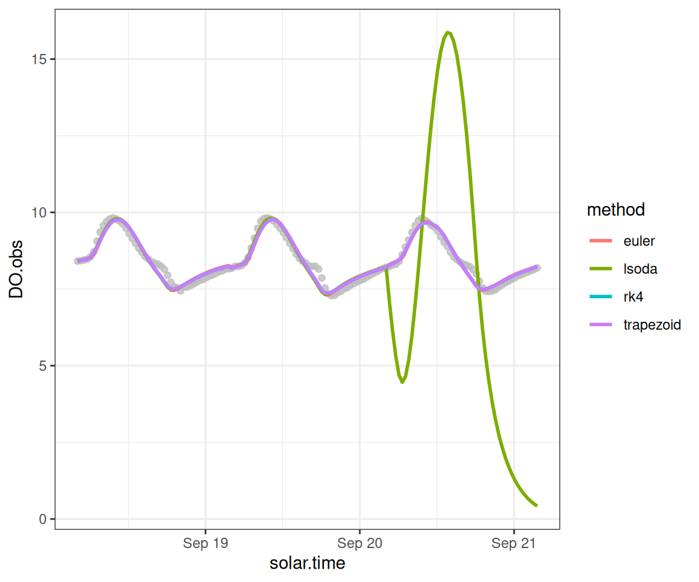
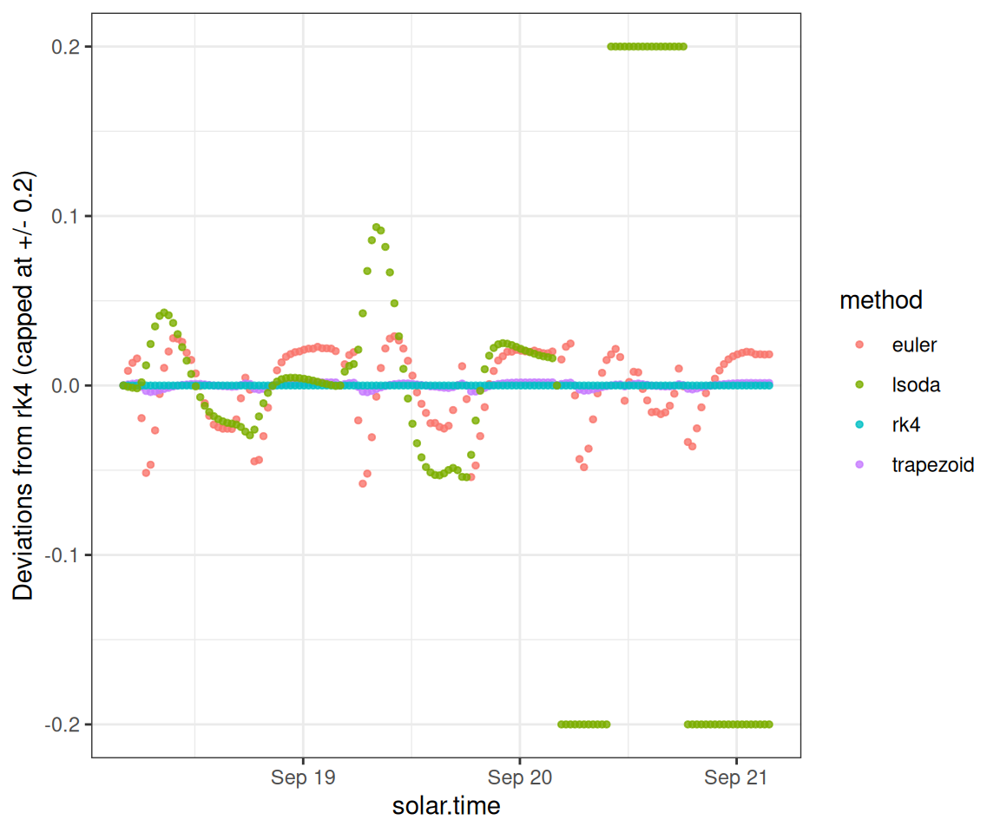

Overview
This vignette demonstrates how you can choose and compare the ODE solution method, which is the numerical algorithm used to translate from a given set of daily metabolism parameters into a time series of dissolved oxygen predictions.
Setup
Load streamMetabolizer and some helper packages.
Get some data to work with: here we’re requesting three days of data at 30-minute resolution. Thanks to Bob Hall for the test data.
dat <- data_metab('3','30')Numerical integration
Inspired by Song et al. 2016, we can now do several types of numerical integration and compare them. lsoda often fails to converge, but rk4 and trapezoid perform well and very similarly to one another (and trapezoid is faster). trapezoid is available for both MLE and Bayesian models.
Here we fit MLE models using four different ODE methods.
Warning in metab_fun(specs = specs, data = data, data_daily = data_daily, : we've seen bad results
with ODE methods 'lsoda', 'lsodes', and 'lsodar'. Use at your own riskDLSODA- At T (=R1), too much accuracy requested
for precision of machine.. See TOLSF (=R2)
In above message, R1 = 27.3718, R2 = nan
Now we create a data.frame to compare the above options.
DO.standard <- rep(predict_DO(mm_rk4)$'DO.mod', times=4)
ode_preds <- bind_rows(
mutate(predict_DO(mm_euler), method='euler'),
mutate(predict_DO(mm_trapezoid), method='trapezoid'),
mutate(predict_DO(mm_rk4), method='rk4'),
mutate(predict_DO(mm_lsoda), method='lsoda')) %>%
mutate(DO.mod.diffeuler = DO.mod - DO.standard)We can plot the predictions from each method.
ggplot(ode_preds, aes(x=solar.time)) +
geom_point(aes(y=DO.obs), color='grey', alpha=0.3) +
geom_line(aes(y=DO.mod, color=method), size=1) +
theme_bw()Warning: Using `size` aesthetic for lines was deprecated in ggplot2 3.4.0.
ℹ Please use `linewidth` instead.
To inspect the details, we can also plot the predictions as deviations from the rk4 method.
ggplot(ode_preds, aes(x=solar.time)) +
geom_point(aes(y=pmax(-0.2, pmin(0.2, DO.mod.diffeuler)), color=method), size=1, alpha=0.8) +
scale_y_continuous(limits=c(-0.2,0.2)) +
ylab("Deviations from rk4 (capped at +/- 0.2)") +
theme_bw()